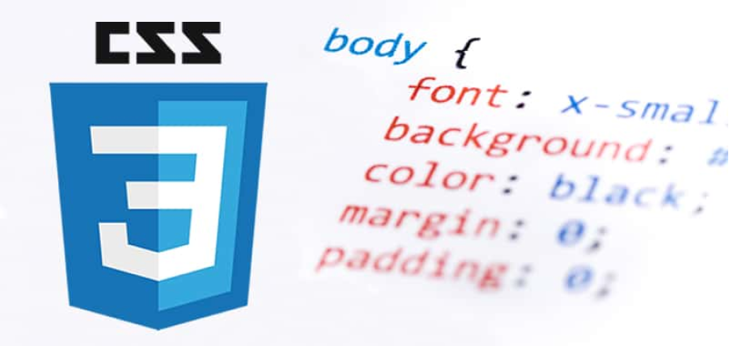

Resumen Del Modulo 2
Este es el Proyecto donde vamos a resumir todo lo visto en el modulo 2, veremos los contenidos bases de Git y GitHub y como usarlos, tambien veremos HTML5 y como se usan las etiquetas y por ultimo veremos CSS para poder tener unas bases de como empezar una pagina web y estilizarla
Git y GitHub

Git
Git es un sistema de control de versiones distribuido que te permite registrar
los cambios que haces en tus archivos y volver a versiones anteriores si algo
sale mal.
Git está optimizado para guardar cambios de forma incremental.
Permite contar con un historial, regresar a una versión anterior y
agregar funcionalidades.
Lleva un registro de los cambios que otras personas realicen en los
archivos.

Como se Usa Git
Git al ser un sistema de control de versiones almacena la informacion como un conjunto de archivs generando las versiones anteriores este permite crear ramas en el proyecto lo que te permite trabajar en distintas caracteristicas o aspectos.
Este se usa mediante comandos donde git tiene una sintaxis de comandos bastante sencilla de comprender entre ellos estan:
git config --list: muestra la configuracion actual
git branch -M main: renombra la rama actual, en la que se esta
git config --global alias.<nombreAlias> "<comando>": crea un alias especifico para git
git init: inicia repositorio (carpeta git) en el directorio actual
git add: agrega todos los archivos modificados al staging
git commit -m "": guarda en el repositorio los archivos del staging
todavia hay cantidad de comandos para poder usar git, y eston se usas deacuerdo a lo que se tenga en cuenta hacer.

GitHub
Github es una plataforma de desarrollo para alojar proyectos utilizando el sistema de control de versiones Git. Se emplea principalmente para la creación de código fuente de programas de computadora.
A GitHub se le podria poder tomar como la red social de código para los programadores, ya que aquí se guarda el portafolio de proyectos de programación mediante repositorios.
.png "Logo de github")
Como se Usa GitHub
Aqui hay algunas de las cosas que GitHub nos deja hacer:
GitHub permite alojar proyectos en repositorios de forma gratuita y pública, pero tiene una forma de pago para privados.
Nos permite compartir fácilmente tus proyectos.Permite colaborar para mejorar los proyectos de otros y a otros mejorar o aportar a los tuyos.
Ofrece todas las ventajas del sistema de control de versiones Git, pero también tiene otras herramientas que ayudan a tener un mejor control de los proyectos.
Al GitHub poder usar el mismo sistema de control de Git este usa comando de este entre ellos estan:
git remote add origen <url>: vincula el repositorio local con el repositorio remoto
git push -u origin main: envia los archivos del repositorio local al repositorio remoto
git pull origin main : nos va a trar al repositorio local, a la rama main, las actualizaciones que haya en el repositorio remoto
git remote: muestra los repositorios remotos con los que se tiene vinculo
git reflog: muestra toda la historia del repositorio
git commit --amend : remienda el ultimo cmmit
HTML5 y CSS3

Qué es HTML
Hyper Text Markup Language o Lenguaje de marcas Hipertexto. El HTML es un lenguaje de marcación de elementos para la creación de documentos hipertexto, muy fácil de aprender, lo que permite que cualquier persona, aunque no haya programado en la vida, pueda enfrentarse a la tarea de crear una web.
<!DOCTYPE html>
<html lang="en">
<head>
<meta charset="UTF-8">
<meta http-equiv="X-UA-Compatible" content="IE=edge">
<meta name="viewport" content="width=device-width, initial-scale=1.0">
<title>Document</title>
</head>
<body>
z
</body>
</html>
Ejemplo de Esqueleto de HTML5
Etiquetas
Las etiquetas HTML van a ayudarnos a brindar una estructura y semántica al contenido de nuestro website y cada una tiene características y usos diferentes aunque visualmente den un resultado similar.
Muchas etiquetas son fácil de diferencias como los headings o las imágenes y otras diferentes como header, footer, section o div, estas se componen de etiquetas de cierre y de apertura aunque algunas otras solo poseen etiquetas unicas.
Selectores
Los selectores CSS son herramientas utilizadas para definir el estilo que quieres dar a tus elementos en CSS. Existen muchos tipos de selectores en este lenguaje, cada uno con su propia sintaxis y utilidad. El uso de las reglas de programación correctas ayuda al explorador a aplicar propiedades específicas a los elementos indicados.
Entre estos los mas comunes son:
Selector universal: *todo
Selector de tipo (Se usa para elegir una etiqueta en general de todo el HTML): elemento{propiedades de estilo}
Selector de Clase: .class
Selector de ID: #ID
Selector de atributo: []atributo
pero que es CSS?

Que Es CSS
El CSS podría definirse como un tipo de lenguaje que permite definir y crear la presentación visual de un documento ya estructurado y escrito en un lenguaje de marcado como puede ser HTML. Es decir, permite generar el diseño visual de páginas web e interfaces de usuario. Esta maneja los estillos mediante cascada, osea que va implementando los estilos de arriba hacia abajo.
Flexbox
Flexbox es un modelo de diseño que nos permite pocisionar los elemtos dentro de HTML, este nos permite ajustar o cambiar desde su altura o anchura dependiendo de lo que requiramos
Pero, flexbox para poder funcionar necesita poder tener un padre y un hijo para poder ver y aplicar los cambios, el hijo se alinea o se aplica el flexbox dependiendo de las propiedades que se le indiquen al padre, este posee muchisimos atributos que nos permite alinear o interactuar
CSS Grid
Es un recurso CSS para poder distribuir un sitio web en una cuadrícula, pero teniendo el control total sobre la posición de los elementos, tanto en las filas, como en las columnas.
Esto proporciona una gran flexibilidad para aprovechar todas sus capacidades y diseños.
Con CSS grid se distribuyen las partes de una web en secciones más pequeñas y puedes determinar el tamaño y la posición de cada uno de los elementos que compongan la web.
Entre las propiedades que hay tenemos:
Display grid
Grid-template
Gaps
Grid-auto
justify-items
align-items
Place-items
Justify-content
align-content
place-content
igualmente, este posee muchas propiedades, para poder alinear, ubicar y entre otras mas.

Modelo de caja
El modelo de caja está compuesto por:
Chrome va a ser el navegador que utilizaremos en el curso por su extenso soporte de nuevos estándares y herramientas de desarrollo avanzadas y de amigable uso.
- Tamaño del del contenido / ancho y alto
- Padding / Relleno
- Border / Bordes
- Margin / Márgenes
Propiedades físicas para el modelo de caja:
- width / height
- margin / margin-top | margin-right | margin-bottom | margin-left
- border / border-top | border-right | border-bottom | border-left
- padding / padding-top | padding-right | padding-bottom | padding-left
Propiedades lógicas para el modelo de caja:
- inline-size / block-size
- margin-block | margin-inline | margin-block-start | margin-block-end | margin-inline-start | margin-inline-end
- border-block | border-inline | border-block-start | border-block-end | border-inline-start | border-inline-end
- padding-block | padding-inline | padding-block-start | padding-block-end | padding-inline-start | padding-inline-end
Nota: Esto al ser del mismo tema que vimos en el modulo 2 el investigador decidio dejarlo en el resumen